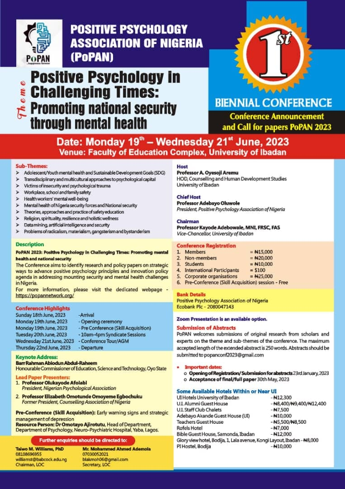

PoPAN 2023: 1st Biennial Conference
Positive Psychology in Challenging Times: Promoting national security through mental health.
Positive psychology and national security
The conference sought research and policy papers on strategic ways to advance positive psychology principles and the innovation policy agenda in addressing mounting security and mental-health challenges in Nigeria.
The theme responded to a concern the President set out in his welcome address: insecurity in Nigeria is economic, social, physical and emotional, and many people are suffering the effects. Experts in behaviour management were invited to show how positive psychology can mitigate insecurity and sustain mental health. The programme also included recognition and awards for well-deserving members of society who have contributed to capacity building and sustainable development.
Presentations by Zoom were available as an option for those unable to attend in person.
Ten areas of enquiry
- Adolescent and youth mental health and the Sustainable Development Goals (SDG)
- Transdisciplinary and multicultural approaches to psychological capital
- Victims of insecurity and psychological trauma
- Workplace, school and family safety
- Health workers’ mental well-being
- Mental health of Nigeria’s security forces and national security
- Theories, approaches and practice of safety education
- Religion, spirituality, resilience and holistic wellness
- Data mining, artificial intelligence and security
- Problems of radicalism, materialism, gangsterism and bystanderism
Conference highlights
- Sunday 18 JuneArrival
- Monday 19 JuneOpening ceremony
- Monday 19 JunePre-conference session (skills acquisition)
- Tuesday 20 JuneSyndicate sessions, 10am–4pm
- Wednesday 21 JuneConference tour and annual general meeting (AGM)
- Thursday 22 JuneDeparture
Who convened and addressed the conference
- Chairman
- Professor Kayode Adebowale, MNI, FRSC, FAS
Vice-Chancellor, University of Ibadan - Chief host
- Professor Adebayo Oluwole
President, Positive Psychology Association of Nigeria - Host
- A. Oyesoji Aremu
Head, Counselling and Human Development Studies, University of Ibadan - Keynote address
- Barr. Rahman Abiodun Abdul-Raheem
Honourable Commissioner of Education, Science and Technology, Oyo State - Lead paper presenters
- Professor Olukayode Afolabi
President, Nigerian Psychological Association
Professor Elizabeth Omotunde Omoyeme Egbochuku
Former President, Counselling Association of Nigeria - Local Organising Committee
- Taiwo M. Williams, PhD, Chairman
Mr. Mohammed Ahmed Ademola, Secretary
“Today, a major challenge facing us in Nigeria is insecurity: economic, social, physical and emotional.”
How papers were invited
PoPAN invited submissions of original research from scholars and experts on the theme and sub-themes of the conference. The maximum length of an extended abstract was 250 words.
- 23 Jan 2023
- Opening of registration and submission of abstracts
- 30 May 2023
- Final/full paper deadline

